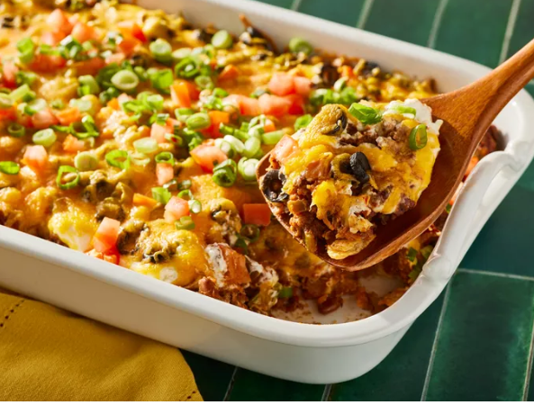
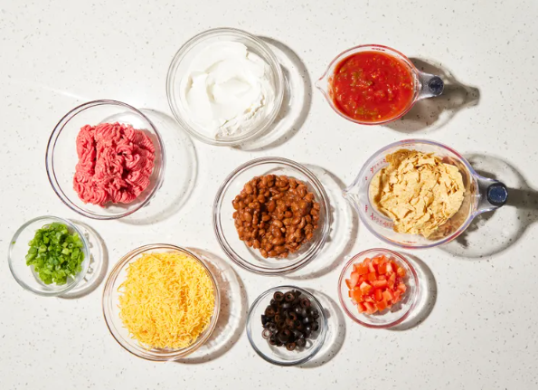
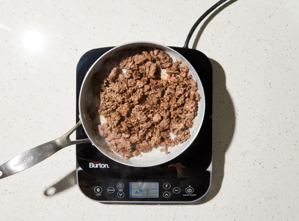
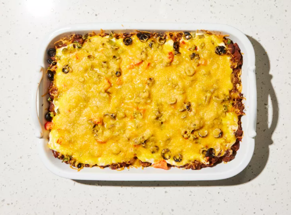

Ce gratin de tacos au bœuf haché et aux chips tortillas est facile à préparer et délicieux. Je remplace souvent le bœuf haché par de la dinde hachée et des produits laitiers allégés, et c'est toujours aussi bon ! Servez ce gratin avec des chips, de la salsa et une salade verte.
Soumis par ANDREALF63 Mise à jour le 26 mars 2026

Rassemblez tous les ingrédients.

Préchauffez le four à 175 °C (350 °F). Vaporisez un plat allant au four de 23 x 33 cm (9 x 13 pouces) avec un aérosol de cuisson.
Faites chauffer une grande poêle à feu moyen-vif. Faites cuire le bœuf haché en remuant constamment jusqu'à ce qu'il soit doré et émietté, pendant 8 à 10 minutes.

Enfournez dans le four préchauffé jusqu'à ce que le dessus soit chaud et bouillonne, environ 30 minutes.

Servez et dégustez !
Certains clients conseillent d'ajouter un sachet d'assaisonnement pour tacos à la viande pendant la cuisson pour plus de saveur. Si vous optez pour cette solution, essayez notre assaisonnement pour tacos maison, un grand classique !